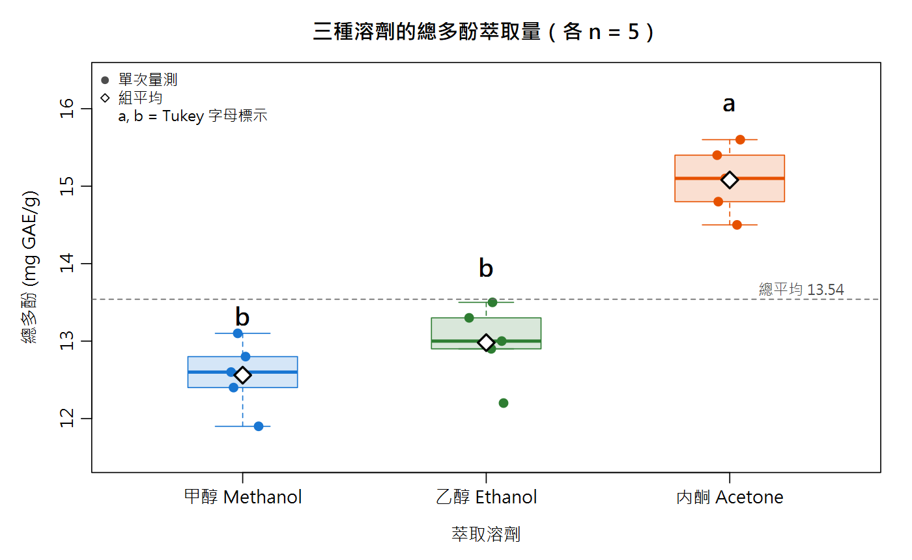
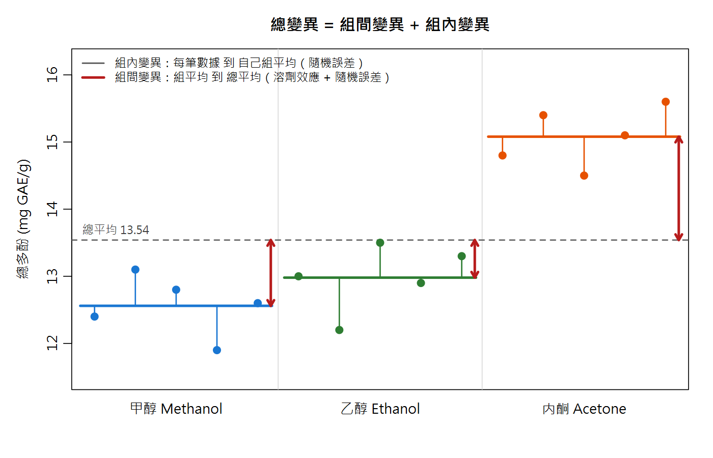
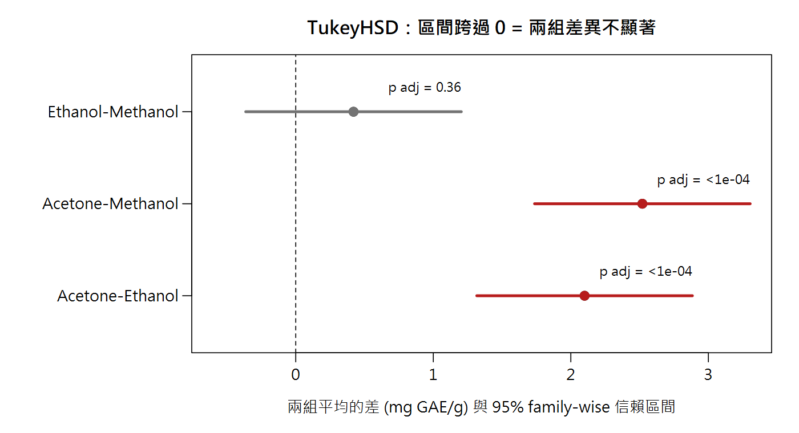
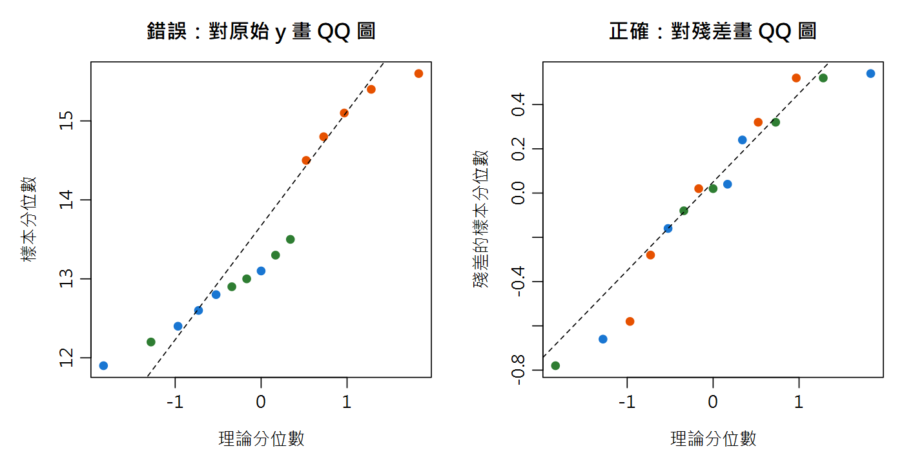

單因子變異數分析與事後比較 One-way ANOVA & Post-hoc Comparisons
你用甲醇、乙醇、丙酮三種溶劑各萃取 5 次總多酚，老闆只問一句：「哪種溶劑比較好？」三組數據、兩兩比要比三次——直接做三次 t 檢定可以嗎？這一章告訴你為什麼不行，以及正確的做法。
var.test）。Ch15 最後也預告了：檢定做越多次，「至少一次假警報」的機率就越膨脹。
本章把比較對象從兩組推廣到三組以上。本章新詞先認識：ANOVA（變異數分析）＝一次檢定「所有組的平均是否全相等」；組間／組內變異＝「組與組差多少」對「同組內自己晃多少」；事後比較（post-hoc）＝ANOVA 顯著之後，再找出「到底是誰跟誰不同」；字母標示＝論文表格裡平均值右上角的 a、b、ab。
名詞卡住了？回 Ch0 名詞圖鑑 查白話解釋與比喻。
- 說明為什麼三組以上不能用多次 t 檢定，並能算出整體型一錯誤 \(1-(1-\alpha)^m\)
- 理解 ANOVA 把總變異拆成「組間＋組內」，會手算 SS、df、MS、F，並讀懂
summary(aov())的每一欄 - 會用
TukeyHSD()、pairwise.t.test()做事後比較，並正確寫出與解讀字母標示（a、b、ab） - 會檢查三個前提（獨立、殘差常態、等變異），前提不成立時改用 Welch ANOVA 或 Kruskal–Wallis
- 會計算效果量 η²，並分辨「統計顯著」與「實務重要」；能寫出一段合格的結果敘述
16.1 開場情境：三種溶劑，哪個萃取得多？
同一批乾燥茶葉粉末，分別用甲醇、乙醇、丙酮（皆為 70% 水溶液）萃取，每種溶劑獨立秤樣、獨立萃取 5 次，以 Folin–Ciocalteu 法測總多酚（mg GAE/g）：
| 溶劑 | 1 | 2 | 3 | 4 | 5 | 平均 | SD |
|---|---|---|---|---|---|---|---|
| 甲醇 Methanol | 12.4 | 13.1 | 12.8 | 11.9 | 12.6 | 12.56 | 0.45 |
| 乙醇 Ethanol | 13.0 | 12.2 | 13.5 | 12.9 | 13.3 | 12.98 | 0.50 |
| 丙酮 Acetone | 14.8 | 15.4 | 14.5 | 15.1 | 15.6 | 15.08 | 0.44 |
# --- 建立資料：一欄是「組別」(factor)，一欄是「量測值」---
solvent <- factor(rep(c("Methanol", "Ethanol", "Acetone"), each = 5),
levels = c("Methanol", "Ethanol", "Acetone"))
tpc <- c(12.4, 13.1, 12.8, 11.9, 12.6, # 甲醇
13.0, 12.2, 13.5, 12.9, 13.3, # 乙醇
14.8, 15.4, 14.5, 15.1, 15.6) # 丙酮
dat <- data.frame(solvent, tpc)
grp_mean <- tapply(tpc, solvent, mean) # 各組平均
grp_sd <- tapply(tpc, solvent, sd) # 各組標準差
round(rbind(mean = grp_mean, sd = grp_sd), 3)
mean(tpc) # 總平均 (grand mean)
Methanol Ethanol Acetone mean 12.560 12.980 15.080 sd 0.451 0.497 0.444 [1] 13.54

肉眼看：丙酮「應該」比較高，甲醇和乙醇「好像」差不多。但「應該」「好像」不能寫進報告——我們需要一個檢定。
16.2 為什麼不能做三次 t 檢定？
三組兩兩比較要做 \(\binom{3}{2}=3\) 次 t 檢定。每一次都有 α = 0.05 的機率「明明沒差卻判成有差」（型一錯誤、假警報）。 做 m 次獨立檢定，至少出現一次假警報的機率是：
就像買樂透：一張中獎機率很低，但買越多張，「至少中一張」的機率就越高——只是這裡中的是「錯誤結論」。 別只相信公式，用模擬親眼看：讓三組數據其實都來自同一個母體（H0 為真），重複 2000 次實驗，數一數兩種做法各喊了幾次「有差異」。
k_pairs <- choose(3, 2) # 3 組 -> 3 對
1 - 0.95^k_pairs # 若三次檢定互相獨立的理論值
round(1 - 0.95^choose(3:6, 2), 3) # 3,4,5,6 組時的理論值
set.seed(2026)
B <- 2000 # 重複 2000 次「H0 為真」的實驗
g3 <- factor(rep(c("A", "B", "C"), each = 5))
any_t <- logical(B) # 三次 t 檢定「任一」顯著？
aov_sig <- logical(B) # ANOVA 顯著？
for (b in 1:B) {
y <- rnorm(15, mean = 13, sd = 0.5) # 三組其實來自同一個母體
p_ab <- t.test(y[g3 == "A"], y[g3 == "B"])$p.value
p_ac <- t.test(y[g3 == "A"], y[g3 == "C"])$p.value
p_bc <- t.test(y[g3 == "B"], y[g3 == "C"])$p.value
any_t[b] <- min(p_ab, p_ac, p_bc) < 0.05
aov_sig[b] <- summary(aov(y ~ g3))[[1]][["Pr(>F)"]][1] < 0.05
}
c(three_t_tests = mean(any_t), anova = mean(aov_sig))
[1] 0.142625
[1] 0.143 0.265 0.401 0.537
three_t_tests anova
0.1165 0.0520 明明三組完全沒差，「三次 t 檢定」卻有 11.7% 的機率喊出至少一個「顯著」，是名目 5% 的兩倍多；ANOVA 只做一次檢定，假警報率守在 5.2%。 （模擬值 11.7% 略低於理論值 14.3%，是因為三次 t 檢定共用同樣的組、彼此不獨立；公式是「獨立」時的近似，但膨脹的結論不變。）
16.3 ANOVA 的核心想法：把變異拆成兩份
ANOVA 的假說：
H1：至少有一組的平均與其他不同 注意 H1 不是「每一組都不同」——這是本章最常見的誤解
想法很直覺。15 筆數據之所以不一樣，原因只有兩種：
組內變異（within）
同一種溶劑、重複 5 次，數值還是不一樣——這是隨機誤差（秤量、萃取、呈色、讀值…），就是方法的重複性。量法：每一筆數據 − 自己那組的平均。
組間變異（between）
三種溶劑的組平均彼此不同——這裡面混了「溶劑真的有效應」＋「隨機誤差」。量法：每組的平均 − 總平均。

如果溶劑其實沒有效應（H0 為真），組平均之間的差異就只是隨機誤差造成的，那麼「用組間估出來的變異數」和「用組內估出來的變異數」應該差不多大，兩者相除 ≈ 1。 如果溶劑真的有效應，組間那一份會被撐大，比值遠大於 1：
var.test 與本章 16.6 節 bartlett.test 的工作。
另外，這個 F 和 Ch15 的 F 檢定是同一個 F 分布，只是這裡的分子分母換成「組間均方／組內均方」，而且只看右尾（F 大才是證據）。先一步一步手算，知道每個數字怎麼來：
N <- length(tpc) # 總樣本數 15 k <- nlevels(solvent) # 組數 3 n_i <- tapply(tpc, solvent, length) # 各組 n grand <- mean(tpc) SS_between <- sum(n_i * (grp_mean - grand)^2) # 組間：各組平均離總平均多遠 SS_within <- sum((tpc - ave(tpc, solvent))^2) # 組內：每筆離自己組平均多遠 SS_total <- sum((tpc - grand)^2) # 總變異 c(SS_between = SS_between, SS_within = SS_within, sum = SS_between + SS_within, SS_total = SS_total) df_between <- k - 1 # 2 df_within <- N - k # 12 MS_between <- SS_between / df_between MS_within <- SS_within / df_within F_value <- MS_between / MS_within p_value <- pf(F_value, df_between, df_within, lower.tail = FALSE) round(c(MS_between = MS_between, MS_within = MS_within, F = F_value), 4) p_value sqrt(MS_within) # 合併標準差 (pooled SD)：方法的組內重複性
SS_between SS_within sum SS_total
18.228 2.588 20.816 20.816
MS_between MS_within F
9.1140 0.2157 42.2597
[1] 3.693193e-06
[1] 0.4643993驗證了 18.228 + 2.588 = 20.816：總變異被完整拆成兩份。組間均方 9.114 是組內均方 0.2157 的 42 倍， 若 H0 為真，出現這麼大 F 的機率只有 3.7×10−6。 順帶一提，\(\sqrt{MS_{within}}\) = 0.46 mg GAE/g 就是三組合併的重複性標準差，和表中各組 SD（0.44–0.50）一致。
16.4 一行指令 aov()，與 ANOVA 表怎麼讀
fit <- aov(tpc ~ solvent, data = dat) # 讀作「tpc 由 solvent 解釋」 summary(fit) qf(0.95, df_between, df_within) # F 臨界值 (alpha = 0.05)
Df Sum Sq Mean Sq F value Pr(>F) solvent 2 18.228 9.114 42.26 3.69e-06 *** Residuals 12 2.588 0.216 --- Signif. codes: 0 '***' 0.001 '**' 0.01 '*' 0.05 '.' 0.1 ' ' 1 [1] 3.885294
和手算完全一致。這張表每一欄的意思：
| 欄位 | 意思 | 本例 |
|---|---|---|
solvent 列 | 組間（因子造成的） | — |
Residuals 列 | 組內（殘差＝隨機誤差） | — |
Df | 自由度：組間 k−1；組內 N−k。不是樣本數，但可反推：組數 = 2+1 = 3，總筆數 = 2+12+1 = 15 | 2；12 |
Sum Sq | 平方和 SS：變異的「總量」 | 18.228；2.588 |
Mean Sq | 均方 MS = SS/df：變異的「平均量」，就是變異數的估計值。Residuals 的 MS 開根號＝合併 SD | 9.114；0.216 |
F value | MS組間 / MS組內；H0 為真時應接近 1 | 42.26 |
Pr(>F) | p 值：F 分布（df = 2, 12）右尾面積。星號只是 p 的分級標記 | 3.69×10−6 |
結論：F(2, 12) = 42.26 遠大於臨界值 3.89，p < 0.001 → 拒絕 H0，三種溶劑的平均總多酚不全相等。 但到這裡為止，我們只知道「至少有一組不同」，還不知道是誰。
16.5 事後比較：到底誰跟誰不同？
(1) Tukey HSD：最常用的「所有兩兩比較」
Tukey 法把「所有兩兩比較」當成一整個家族，保證整個家族的假警報率仍是 5%（family-wise），直接解決 16.2 節的膨脹問題。
tk <- TukeyHSD(fit) tk qtukey(0.95, k, df_within) * sqrt(MS_within / 5) # HSD：兩組平均至少要差這麼多才顯著 plot(tk) # 畫出三個差值的 95% 信賴區間
Tukey multiple comparisons of means
95% family-wise confidence level
Fit: aov(formula = tpc ~ solvent, data = dat)
$solvent
diff lwr upr p adj
Ethanol-Methanol 0.42 -0.3635832 1.203583 0.3572998
Acetone-Methanol 2.52 1.7364168 3.303583 0.0000051
Acetone-Ethanol 2.10 1.3164168 2.883583 0.0000322
[1] 0.7835832怎麼讀：diff = 前者平均 − 後者平均；lwr/upr = 差值的 95% 信賴區間；p adj = 已校正多重比較的 p 值。
判讀口訣：區間不含 0（或 p adj < 0.05）→ 這一對有顯著差異。
- 丙酮 − 甲醇 = 2.52（1.74 ~ 3.30），p adj < 0.001 → 顯著
- 丙酮 − 乙醇 = 2.10（1.32 ~ 2.88），p adj < 0.001 → 顯著
- 乙醇 − 甲醇 = 0.42（−0.36 ~ 1.20），p adj = 0.36 → 不顯著（區間跨過 0）
最後一行的 HSD = 0.78 是「最小顯著差距」：各組 n 相同時，任兩組平均要差超過 0.78 mg GAE/g 才算顯著（0.42 < 0.78，所以乙醇與甲醇分不出來）。

plot(TukeyHSD(fit)) 的重繪版：灰色區間跨過 0（虛線）＝不顯著；紅色區間完全在 0 的右邊＝顯著。(2) pairwise.t.test() + Holm 校正
另一條路：照樣做兩兩 t 檢定，但把 p 值調大來補償多重比較。Holm 法比傳統 Bonferroni（p × 次數）不那麼保守，是通用的好選擇。
pairwise.t.test(tpc, solvent, p.adjust.method = "holm")
Pairwise comparisons using t tests with pooled SD
data: tpc and solvent
Methanol Ethanol
Ethanol 0.18 -
Acetone 5.5e-06 2.3e-05
P value adjustment method: holm 表中每格是該對比較的校正後 p 值：乙醇–甲醇 0.18（不顯著），丙酮對另兩者都 < 0.001。結論與 Tukey 相同。 兩種方法 p 值不會一模一樣（校正原理不同），事前選定一種、寫進報告即可，不要兩種都跑再挑喜歡的。
(3) 論文常見的字母標示：a、b、ab
食品期刊的表格常在平均值後面標小寫字母，註腳寫「同欄不同字母表示有顯著差異（Tukey, p < 0.05）」。規則只有一條：
字母不是成績等第，也不代表差多少；習慣上平均最大的組從 a 開始標，但也有人從最小開始，要看註腳。
手動推導三步驟（各組 n 相同時適用）：① 把平均由大到小排好；② 從最大的開始，往下找「彼此全部不顯著」的最長一串，這一串發同一個字母；③ 換下一串發下一個字母，一組若同時屬於兩串，就拿到兩個字母。
主範例：丙酮 15.08 ｜ 乙醇 12.98、甲醇 12.56。丙酮和誰都顯著不同 → 自己一串「a」；乙醇和甲醇彼此不顯著 → 同一串「b」。結果：丙酮 a、乙醇 b、甲醇 b（見圖 16-1）。
把三步驟寫成一個小函數（只用 base R），順便用第三組資料看看 ab 是怎麼出現的——乾燥溫度（40／50／60 °C）對維生素 C 保留率（%）：
cld_simple <- function(fit_aov, alpha = 0.05) {
fac <- names(fit_aov$xlevels)[1]
y <- fit_aov$model[[1]]; g <- fit_aov$model[[2]]
m <- sort(tapply(y, g, mean), decreasing = TRUE) # (1) 由大到小
nm <- names(m); kk <- length(nm)
tkp <- TukeyHSD(fit_aov)[[fac]][, "p adj"]
ns <- matrix(TRUE, kk, kk, dimnames = list(nm, nm)) # TRUE = 不顯著
for (pair in names(tkp)) {
ab <- strsplit(pair, "-")[[1]]
ns[ab[1], ab[2]] <- ns[ab[2], ab[1]] <- tkp[[pair]] >= alpha
}
runs <- list()
for (i in 1:kk) { # (2) 從第 i 組往下延伸，直到出現顯著差異
j <- i
while (j < kk && all(ns[i:(j + 1), i:(j + 1)])) j <- j + 1
runs[[length(runs) + 1]] <- i:j
}
keep <- sapply(seq_along(runs), function(a) # 丟掉被別的區段完全包住的
!any(sapply(seq_along(runs), function(b)
b != a && all(runs[[a]] %in% runs[[b]]) &&
length(runs[[b]]) > length(runs[[a]]))))
runs <- runs[keep]
lab <- setNames(rep("", kk), nm)
for (r in seq_along(runs)) lab[runs[[r]]] <- paste0(lab[runs[[r]]], letters[r]) # (3) 發字母
data.frame(mean = round(as.numeric(m), 2), letter = lab)
}
cld_simple(fit)
# 第三組小資料：乾燥溫度對維生素 C 保留率 (%)，示範 "ab"
temp <- factor(rep(c("T40", "T50", "T60"), each = 5))
vitc <- c(86.9, 84.2, 87.6, 85.1, 86.3, # 40 °C
85.4, 82.8, 86.0, 83.5, 84.9, # 50 °C
83.6, 81.4, 84.3, 82.0, 83.1) # 60 °C
fit_vc <- aov(vitc ~ temp)
summary(fit_vc)
round(TukeyHSD(fit_vc)$temp, 4)
cld_simple(fit_vc)
mean letter
Acetone 15.08 a
Ethanol 12.98 b
Methanol 12.56 b
Df Sum Sq Mean Sq F value Pr(>F)
temp 2 24.66 12.33 7.339 0.00828 **
Residuals 12 20.16 1.68
---
Signif. codes: 0 '***' 0.001 '**' 0.01 '*' 0.05 '.' 0.1 ' ' 1
diff lwr upr p adj
T50-T40 -1.50 -3.6872 0.6872 0.2018
T60-T40 -3.14 -5.3272 -0.9528 0.0063
T60-T50 -1.64 -3.8272 0.5472 0.1545
mean letter
T40 86.02 a
T50 84.52 ab
T60 82.88 b維生素 C 的例子：ANOVA 顯著（p = 0.008），但 Tukey 只有 40 °C vs 60 °C 這一對顯著（p adj = 0.006）。 50 °C 夾在中間，和 40 °C 分不出來（共用 a）、和 60 °C 也分不出來（共用 b），所以拿到 ab。
各組 n 不同或組數很多時，手動推導容易出錯，實務上可用套件（如 multcompView）自動產生；本課程先求看得懂、推得出來。
16.6 前提檢查：ANOVA 的三個假設
| 前提 | 意思 | 怎麼檢查 | 違反的嚴重度 |
|---|---|---|---|
| ① 獨立性 | 每一筆數據都是獨立取得的重複 | 無法用統計檢定，只能靠實驗設計與紀錄 | 最嚴重，事後無法補救 |
| ② 常態性 | 殘差（每筆 − 自己組平均）來自常態分布 | 殘差 QQ 圖為主，shapiro.test(residuals(fit)) 為輔 | 各組 n 相近時，ANOVA 對輕微偏離相當耐受 |
| ③ 等變異 | 各組的母體變異數相同 | 看各組 SD、盒鬚圖；bartlett.test、Brown–Forsythe | 變異差很多（尤其各組 n 又不同）時影響大 → 16.7 節 |
① 獨立性與「偽重複」（pseudoreplication）
把它當 n = 3 丟進 ANOVA，組內變異會被嚴重低估 → F 被灌水 → p 小得不真實。這叫偽重複。
正確做法：重複的單位必須是你想推論的那個層級——每種溶劑獨立萃取 5 次才是 n = 5；同一瓶的多次注射先取平均，當成 1 筆。 （「萃取」與「注射」兩層變異怎麼分開估計，是 Ch17 精密度分解的主題。）
② 常態性：檢查「殘差」，不是原始 y
ANOVA 的模型是「量測值 = 該組平均 + 隨機誤差」，常態假設講的是隨機誤差，也就是殘差。 如果把三組原始數據混在一起檢查，當各組平均本來就不同時，混合起來自然是「多峰」而不像一個鐘形——那不是違反假設，那正是你想證明的事！
res <- residuals(fit) # 殘差 = 每筆 - 自己那組的平均
shapiro.test(res) # 正確：對殘差
shapiro.test(tpc) # 錯誤示範：對原始 y（三組平均不同 -> 本來就不像一個鐘形）
qqnorm(res); qqline(res) # 殘差 QQ 圖：點大致沿直線 = OK
# 把 n 加大到每組 20 就看得很清楚：每一組都是「完美常態」，只是平均不同
set.seed(61)
g_demo <- factor(rep(c("G1", "G2", "G3"), each = 20))
y_demo <- rnorm(60, mean = rep(c(12.5, 13.0, 15.0), each = 20), sd = 0.45)
c(raw_y = shapiro.test(y_demo)$p.value, # 對原始 y：被判「非常態」
residuals = shapiro.test(residuals(aov(y_demo ~ g_demo)))$p.value) # 對殘差：沒問題
Shapiro-Wilk normality test
data: res
W = 0.92945, p-value = 0.2678
Shapiro-Wilk normality test
data: tpc
W = 0.90742, p-value = 0.1236
raw_y residuals
0.0008120148 0.3144730629 主範例的殘差 Shapiro p = 0.27，沒有偏離常態的證據。對原始 y 檢查時 W 已經變差（0.929 → 0.907），只是 n = 15 太小還沒跨過 0.05； 模擬資料（每組 n = 20、每組都是貨真價實的常態）就很清楚：對原始 y 檢查 p = 0.0008，會誤判成「非常態」；對殘差檢查 p = 0.31，才是正確答案。

第二個陷阱：n 很小時，Shapiro「不顯著」幾乎沒有資訊量。下面讓資料明明來自右偏的指數分布，看 Shapiro 有多少機率抓得到：
set.seed(16) shapiro_power <- function(n, B = 2000) # 資料明明是右偏的指數分布 mean(replicate(B, shapiro.test(rexp(n))$p.value < 0.05)) round(sapply(c(n3 = 3, n5 = 5, n15 = 15, n50 = 50), shapiro_power), 3)
n3 n5 n15 n50 0.078 0.158 0.679 1.000
n = 3 時只有 7.8% 的機率偵測到（幾乎等於亂猜的 5%），n = 5 也只有 16%。所以「每組 n = 3，Shapiro 都不顯著，所以是常態」是無效論證——檢定力太低，什麼分布都會「不顯著」（回想 Ch15 的檢定力）。 這也是為什麼要把所有組的殘差合起來檢查（本例 15 筆），並且以 QQ 圖和對量測原理的了解為主、檢定為輔。
③ 等變異：Bartlett 與手刻 Brown–Forsythe
先看各組 SD：0.45、0.50、0.44，幾乎一樣。粗略經驗法則：最大 SD／最小 SD 小於約 2，且各組 n 相同，通常可以放心。正式檢定：
bartlett.test(tpc ~ solvent, data = dat) # Brown-Forsythe (Levene 的中位數版)：對「離組中位數的絕對距離」再做一次 ANOVA z <- abs(tpc - ave(tpc, solvent, FUN = median)) summary(aov(z ~ solvent))
Bartlett test of homogeneity of variances
data: tpc by solvent
Bartlett's K-squared = 0.055454, df = 2, p-value = 0.9727
Df Sum Sq Mean Sq F value Pr(>F)
solvent 2 0.0013 0.00067 0.009 0.991
Residuals 12 0.9320 0.07767 bartlett.test 的 H0 是「各組變異數相等」，p = 0.97 → 沒有變異不等的證據。
Bartlett 的缺點是對非常態很敏感（資料稍微偏態就容易誤報）。較穩健的 Levene／Brown–Forsythe 檢定 base R 沒有內建，但原理很簡單：
算出每筆數據「離自己組中位數的絕對距離」，如果某組比較散，它的距離就普遍比較大——於是對這些距離再做一次 ANOVA 即可。本例 p = 0.99，結論相同。
16.7 前提不成立怎麼辦？Welch ANOVA 與 Kruskal–Wallis
第二組資料：抽驗市售 4 個品牌醬油的總氮（g/100 mL，凱氏法），每個品牌買 6 個不同批號。A、B 是大廠，批次間非常穩定；C、D 是小型釀造廠，批次差異很大。
brand <- factor(rep(c("A", "B", "C", "D"), each = 6))
tn <- c(1.42, 1.45, 1.43, 1.46, 1.44, 1.41, # A 大廠，批次很穩
1.52, 1.50, 1.55, 1.51, 1.53, 1.49, # B 大廠，批次很穩
1.38, 1.62, 1.25, 1.71, 1.49, 1.30, # C 小廠，批次差異大
1.60, 1.33, 1.78, 1.41, 1.69, 1.22) # D 小廠，批次差異大
round(rbind(mean = tapply(tn, brand, mean), sd = tapply(tn, brand, sd)), 3)
bartlett.test(tn ~ brand) # 等變異？
summary(aov(abs(tn - ave(tn, brand, FUN = median)) ~ brand)) # Brown-Forsythe
A B C D
mean 1.435 1.517 1.458 1.505
sd 0.019 0.022 0.182 0.219
Bartlett test of homogeneity of variances
data: tn by brand
Bartlett's K-squared = 30.073, df = 3, p-value = 1.332e-06
Df Sum Sq Mean Sq F value Pr(>F)
brand 3 0.14055 0.04685 13.05 6.02e-05 ***
Residuals 20 0.07182 0.00359 SD 從 0.019 到 0.219，差了超過 10 倍；Bartlett 與 Brown–Forsythe 都強烈拒絕「等變異」。現在用三種方法分析同一份資料：
summary(aov(tn ~ brand)) # (1) 傳統 ANOVA（假設等變異） oneway.test(tn ~ brand) # (2) Welch ANOVA（不假設等變異） kruskal.test(tn ~ brand) # (3) Kruskal-Wallis（以等級為基礎） pairwise.t.test(tn, brand, p.adjust.method = "holm", pool.sd = FALSE) # Welch 版事後比較
Df Sum Sq Mean Sq F value Pr(>F) brand 3 0.0267 0.008915 0.436 0.73 Residuals 20 0.4089 0.020446 One-way analysis of means (not assuming equal variances) data: tn and brand F = 14.464, num df = 3, denom df = 10, p-value = 0.000573 Kruskal-Wallis rank sum test data: tn by brand Kruskal-Wallis chi-squared = 3.1928, df = 3, p-value = 0.3628 Pairwise comparisons using t tests with non-pooled SD data: tn and brand A B C B 0.00025 - - C 1.00000 1.00000 - D 1.00000 1.00000 1.00000 P value adjustment method: holm
| 方法 | 結果 | 為什麼 |
|---|---|---|
傳統 ANOVA aov | p = 0.73（不顯著） | 把四組的變異「合併」成一個 MSwithin，C、D 的巨大變異把 A、B 之間清楚的差異淹沒了 |
Welch ANOVA oneway.test | p = 0.0006（顯著） | 每組用自己的變異數加權，A、B 很精密所以權重大；注意分母自由度被調成 10 而非 20 |
Kruskal–Wallis kruskal.test | p = 0.36（不顯著） | 只用「名次」；C、D 的數值散布在 A、B 的兩側，名次互相抵銷 |
三種方法、兩種相反的結論。事後比較（Welch 版、Holm 校正）指出差異來自 A vs B（1.435 vs 1.517，p = 0.00025）；C、D 因為自己太不穩定，和誰都分不出來。
oneway.test），事後比較用 pairwise.t.test(..., pool.sd = FALSE) 加 Holm 校正。它是 Ch15 Welch t 檢定的多組版本；變異其實相等時，它的結果也和傳統 ANOVA 很接近，幾乎沒有損失。殘差嚴重偏態、有極端值，或資料本身是等級／評分（如感官評分）→ 考慮 Kruskal–Wallis。但要記得：它檢定的是「各組分布的位置是否一致」，而且並不能解決變異不等的問題（本例就是證據）。
獨立性有問題 → 任何方法都救不了，只能重新設計實驗或改用能處理階層結構的模型（Ch17）。
最重要的：方法要在看結果之前決定。三種都跑、再挑 p 最小的那個來報告，和 16.2 節的多次 t 檢定犯的是同一種錯。
這個例子還有一個食品分析上的提醒：對品管來說，「C、D 的批次變異是 A、B 的 10 倍」本身可能就是比平均值更重要的發現。
16.8 效果量 η² 與「統計顯著 vs 實務重要」
p 值只回答「差異是不是真的」，沒有回答「差異有多大」。ANOVA 最簡單的效果量是 η²（eta squared）：
再看一個反例：假設有人很勤勞，三種萃取條件各做了 100 次，而真實平均只差 0.1–0.2 mg GAE/g：
eta2 <- SS_between / SS_total
round(eta2, 3)
# 大樣本示範：真實差異最多只有 0.2 mg GAE/g，但每組 n = 100
set.seed(8)
g_big <- factor(rep(c("S1", "S2", "S3"), each = 100))
y_big <- rnorm(300, mean = rep(c(12.6, 12.8, 12.7), each = 100), sd = 0.45)
tab_big <- summary(aov(y_big ~ g_big))[[1]]
tab_big
round(tapply(y_big, g_big, mean), 2)
round(tab_big[["Sum Sq"]][1] / sum(tab_big[["Sum Sq"]]), 3) # eta^2
[1] 0.876
Df Sum Sq Mean Sq F value Pr(>F)
g_big 2 3.003 1.50142 7.4039 0.000728 ***
Residuals 297 60.228 0.20279
---
Signif. codes: 0 '***' 0.001 '**' 0.01 '*' 0.05 '.' 0.1 ' ' 1
S1 S2 S3
12.56 12.80 12.64
[1] 0.047p = 0.0007，三顆星，統計上非常顯著；但 η² 只有 0.047，最大的平均差也只有 12.80 − 12.56 = 0.24 mg GAE/g。 這個差異重不重要，統計回答不了，要拿專業的尺來量：
• 大樣本反例的差異 0.24 < U：比「單次量測自己的不確定度」還小，換溶劑在實務上幾乎沒有意義，即使 p 很漂亮。
• 主範例丙酮比另兩種高 2.1–2.5 mg GAE/g，是 U 的 4–5 倍，相當於多萃取出約 16–20%：統計顯著而且實務重要。
• 主範例乙醇 vs 甲醇的差 0.42 不顯著，但它的 95% CI 是 −0.36 ~ 1.20——資料無法排除高達 1.2 的差異。正確說法是「目前的證據不足以分辨」，不是「已證明兩者相等」。
結論：永遠同時報告 p 值、差異大小（含信賴區間）與效果量；p 小 ≠ 差異大，p 大 ≠ 沒有差異。
16.9 報告怎麼寫：一段可以直接模仿的範例
【統計方法】各溶劑獨立萃取 5 次（n = 5）。以單因子變異數分析（one-way ANOVA）比較三種溶劑之總多酚含量，顯著水準 α = 0.05； 以殘差之常態 QQ 圖與 Shapiro–Wilk 檢定確認常態性，以 Bartlett 檢定確認變異數同質性；ANOVA 顯著時以 Tukey HSD 進行事後比較。統計分析使用 R 4.6.1。
【結果】殘差未顯示偏離常態（W = 0.929，p = 0.27），各組變異數同質（Bartlett p = 0.97）。 三種溶劑之總多酚萃取量有顯著差異（F(2, 12) = 42.26，p < 0.001，η² = 0.88）。 Tukey HSD 事後比較顯示，丙酮（15.08 ± 0.44 mg GAE/g）顯著高於乙醇（12.98 ± 0.50）與甲醇（12.56 ± 0.45）（校正後 p 皆 < 0.001）； 乙醇與甲醇之間無顯著差異（平均差 0.42，95% CI −0.36 至 1.20，校正後 p = 0.36）（表 1）。
| 表 1 溶劑 | n | 總多酚（mg GAE/g） |
|---|---|---|
| 甲醇 | 5 | 12.56 ± 0.45 b |
| 乙醇 | 5 | 12.98 ± 0.50 b |
| 丙酮 | 5 | 15.08 ± 0.44 a |
數值為平均 ± SD。同欄不同上標字母表示有顯著差異（Tukey HSD，p < 0.05）。
檢查清單：① F 後面兩個自由度都要寫（組間, 組內）；② p 很小時寫 p < 0.001，不要寫 p = 0.000；③ 說明 ± 後面是 SD 還是 SEM、n 是多少；④ 字母一定要有註腳說明方法與 α；⑤ 不顯著的比較也要報告差值與信賴區間。
# 用 R 直接排出報告用的表
lt <- cld_simple(fit)
data.frame(solvent = levels(solvent),
n = as.integer(n_i),
mean_sd = sprintf("%.2f ± %.2f", grp_mean, grp_sd),
letter = lt[levels(solvent), "letter"])
solvent n mean_sd letter 1 Methanol 5 12.56 ± 0.45 b 2 Ethanol 5 12.98 ± 0.50 b 3 Acetone 5 15.08 ± 0.44 a
📊 Excel 也會算：單因子變異數分析
⬇ 下載本章 Excel 活頁簿 數據、公式、白話說明都排好了，打開就能算；改黃色儲存格試試看，最後一張工作表會幫你和 R 的答案對照。
方法一：資料分析工具箱（先到「檔案 → 選項 → 增益集」啟用「分析工具箱」）① 把三組數據排成三欄：
A1:C1 放組名（甲醇、乙醇、丙酮），A2:C6 放數據。② 「資料」→「資料分析」→「單因子變異數分析（Anova: Single Factor）」→ 輸入範圍
$A$1:$C$6、分組方式「逐欄」、勾選「類別軸標記是在第一列上」、α = 0.05。③ 輸出的 ANOVA 表和 R 逐欄對應：
| Excel 欄位 | R 的欄位 | 本例 |
|---|---|---|
| 變源：組間／組內／總和 | solvent／Residuals／（R 不列總和） | — |
| SS | Sum Sq | 18.228／2.588／20.816 |
| 自由度 | Df | 2／12／14 |
| MS | Mean Sq | 9.114／0.2157 |
| F | F value | 42.26 |
| P-值 | Pr(>F) | 3.69E-06 |
| 臨界值 | qf(0.95, 2, 12) | 3.885 |
A2:C6）| 計算 | Excel 函數 | 結果 |
|---|---|---|
| SStotal | =DEVSQ(A2:C6) | 20.816 |
| SSwithin | =DEVSQ(A2:A6)+DEVSQ(B2:B6)+DEVSQ(C2:C6) | 2.588 |
| SSbetween | =SS_total − SS_within | 18.228 |
| F | =(SS_between/2)/(SS_within/12) | 42.26 |
| p 值（右尾） | =F.DIST.RT(42.26, 2, 12) | 3.69E-06 |
| F 臨界值 | =F.INV.RT(0.05, 2, 12) | 3.885 |
| η² | =SS_between/SS_total | 0.876 |
DEVSQ 就是「離均差平方和」；F.DIST.RT 的 RT = right tail（右尾），對應 R 的 pf(..., lower.tail = FALSE)。限制：Excel 工具箱沒有 Tukey HSD、Welch ANOVA 與殘差診斷；ANOVA 顯著之後的事後比較請回到 R。千萬不要在 Excel 裡改做三次
T.TEST——那正是 16.2 節的錯誤。pf(42.26, 2, 12, lower.tail = FALSE) # = F.DIST.RT(42.26, 2, 12) qf(0.05, 2, 12, lower.tail = FALSE) # = F.INV.RT(0.05, 2, 12)
[1] 3.693036e-06 [1] 3.885294
16.10 常見迷思總整理
| 迷思 | 正確觀念 |
|---|---|
| ① ANOVA 顯著＝每一組都不同 | 只代表「至少一組不同」；誰跟誰不同要看事後比較（16.5） |
| ② ANOVA 是在比各組的變異數 | 它用變異數當工具，檢定的是平均數是否全相等（16.3） |
| ③ 對原始 y 檢查常態 | 要檢查的是殘差；各組平均不同時，原始 y 混在一起本來就不像常態（16.6） |
| ④ n = 3，Shapiro 不顯著，所以是常態 | n 太小時檢定力只有 8% 左右，「不顯著」沒有資訊量；看 QQ 圖與量測原理（16.6） |
| ⑤ 同一瓶注射 3 次就是 n = 3 | 那是偽重複；獨立重複的單位必須是「獨立萃取」（16.6） |
| ⑥ 不顯著＝兩組相等 | 只是「證據不足以分辨」；看差值的信賴區間有多寬（16.8） |
| ⑦ 統計顯著＝實務上重要 | n 很大時微小差異也會顯著；要對照 η²、差值大小與方法的量測不確定度（16.8） |
| ⑧ 字母 ab 是介於 a、b 之間的另一個等級 | ab 表示和 a 組、b 組都分不出來；判讀只看「有沒有共同字母」（16.5） |
| ⑨ 多做幾次 t 檢定就能取代 ANOVA | 整體假警報率會膨脹為 1 − 0.95m；要用 ANOVA ＋ 有校正的事後比較（16.2） |